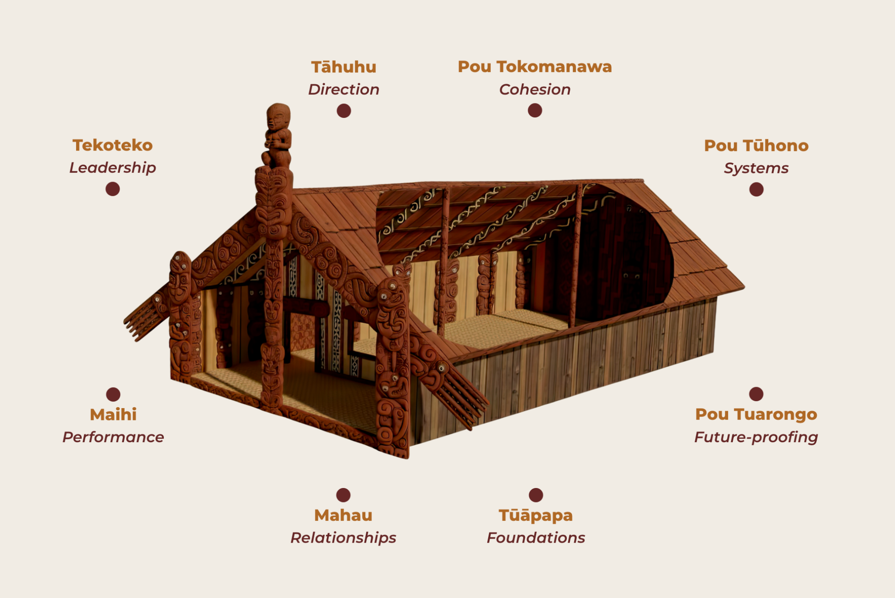
Open full-screen ↗Governance through the Whare
A living model for roles, relationships, systems and decision-making.
We’re travelling to meet people exploring governance, leadership, organisational development and community impact.
We believe Indigenous knowledge systems have much to contribute, and we’re equally excited to learn from others asking big questions in different ways.
Rather than viewing these as separate disciplines, mātauranga Māori understands them as different expressions of the same living system.

Holding the whole system with clarity and accountability.
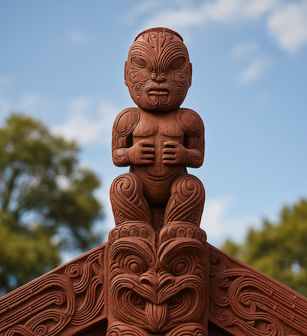
Leading from service, values and whakapapa.
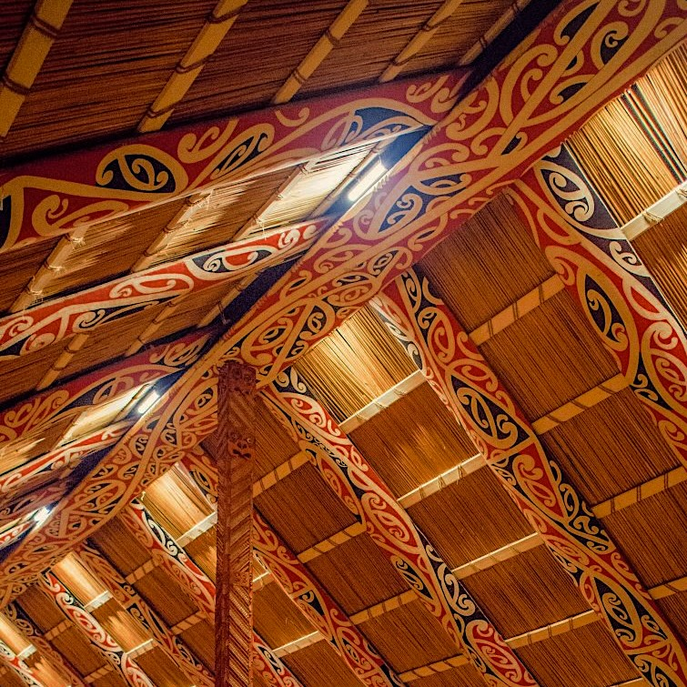
Navigating towards a shared vision across generations.
Living our identity, language and values in all that we do.
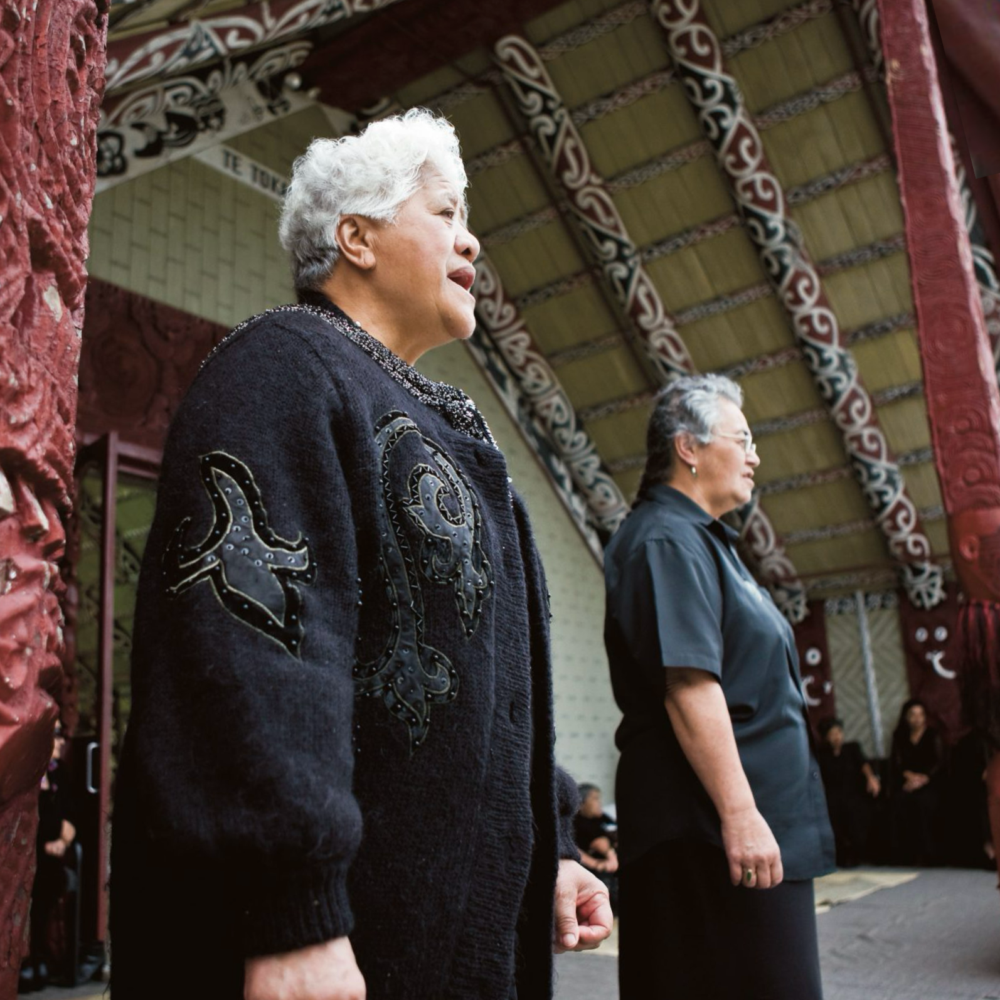
Caring for people, place and resources for future generations.
Understanding what truly changes for our people and our world.
Below are some examples of indigenous frameworks that we draw on related to governance and organisational leadership.

Open full-screen ↗A living model for roles, relationships, systems and decision-making.
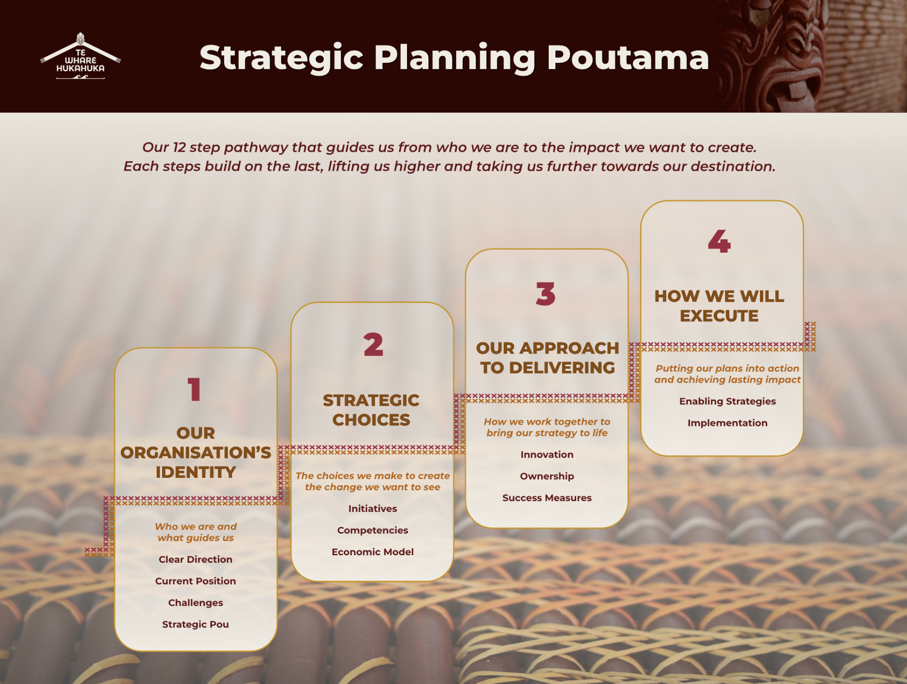
Open full-screen ↗A pathway from organisational identity through strategic choices and delivery.
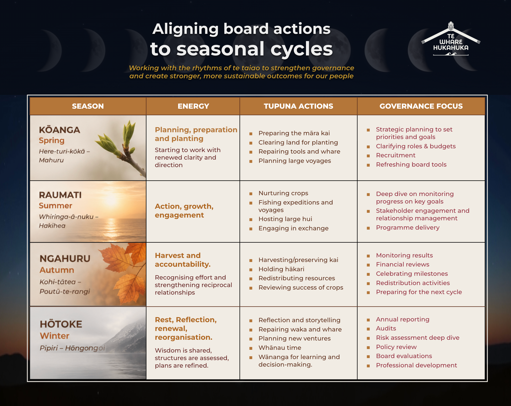
Open full-screen ↗Aligning board activity and organisational energy with seasonal cycles.
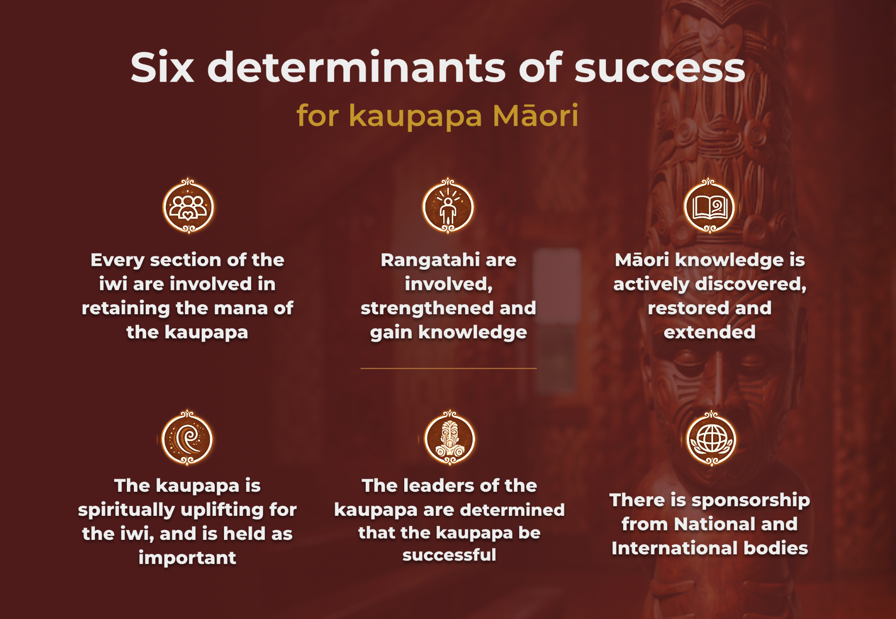
Open full-screen ↗Six determinants observed within successful kaupapa Māori organisations.
For more than a decade, we’ve worked alongside Māori organisations at every stage of growth—developing practical governance and leadership frameworks grounded in mātauranga Māori.
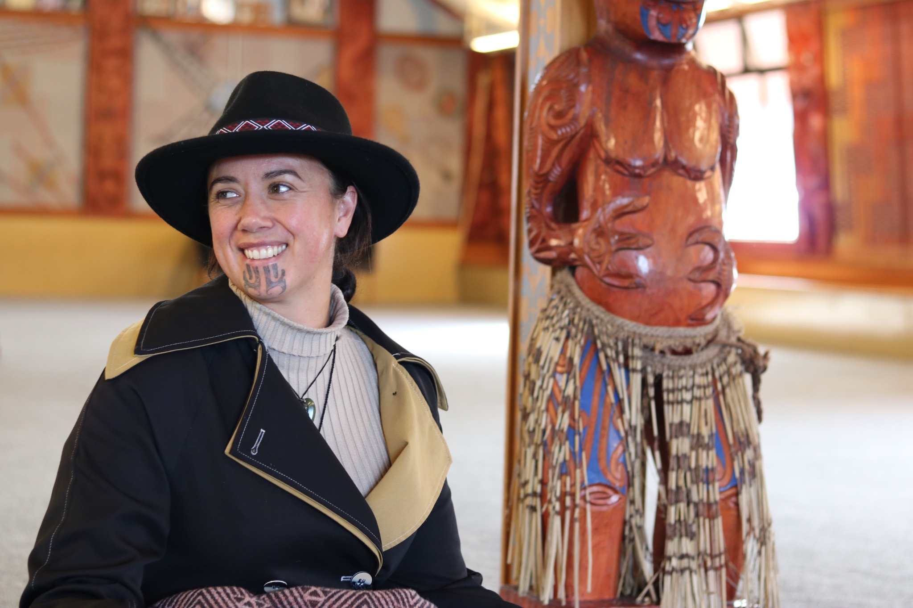
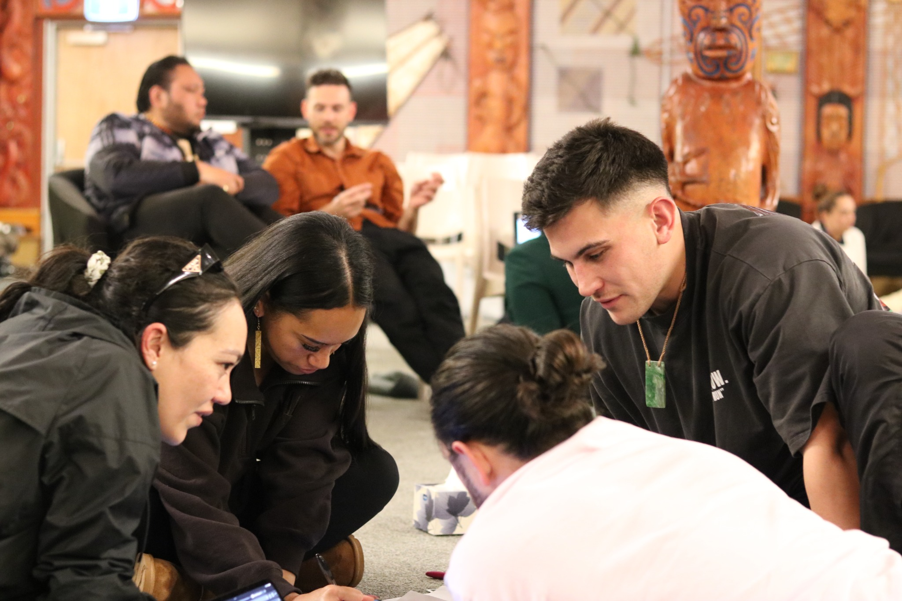
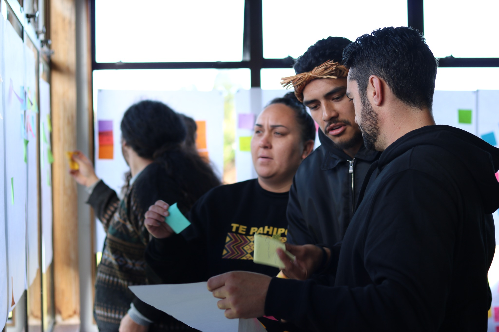
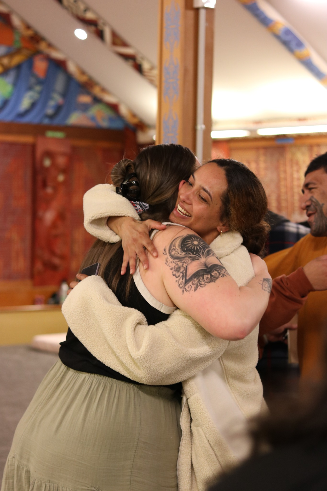
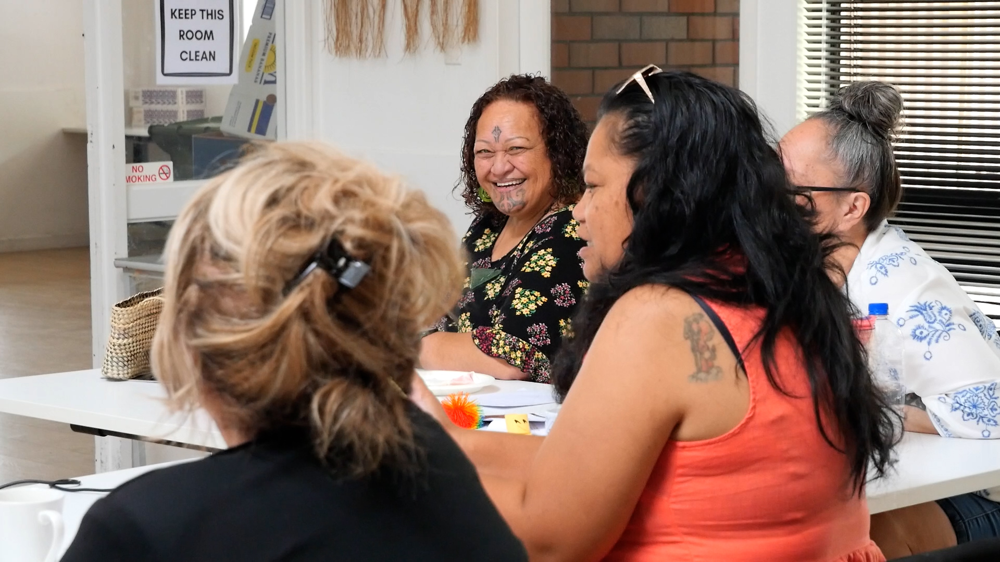
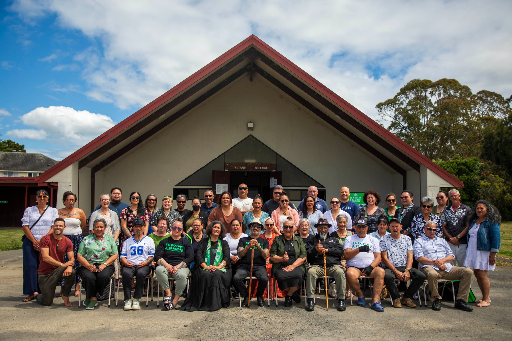
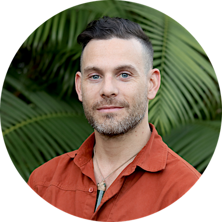
Co-founder. Governance, strategy and organisational development specialist.
View bio →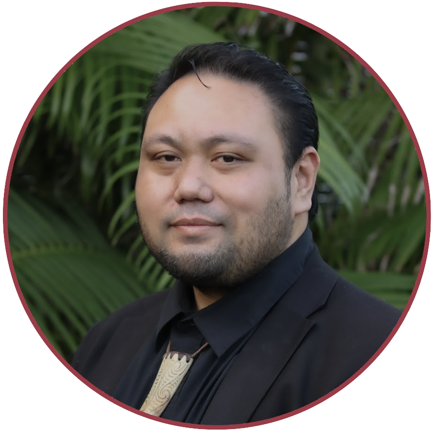
Co-founder and facilitator; former CEO of the Edmund Hillary Fellowship.
View bio →Late August–mid September
Mid–late September